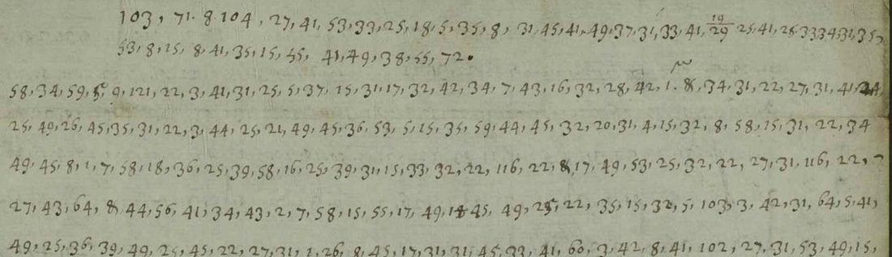

At a glanceExisting decipherment · complete
- The letter
- A duplicate of a French letter of 19/29 July 1645, “sent by another way”, signed with numbers. Lasry suggests it may be Dr Stephen Goffe’s letter from Holland, forwarded unchanged to the King.
- Where
- The National Archives, Kew, SP 106/10 ff. 216–217; DECODE R787. It was part of catalogue item 59, which grouped six letters in four different keys.
- The cipher
- Numbers from 1 to 60 for letters, two for most letters and nine for I, separated by commas. Numbers above 60 stand for names and titles.
- How it was deciphered
- George Lasry reconstructed the key (“TNA SP106-2”) and deciphered the letter on DECODE in October 2020. His plaintext is the text; it stays on DECODE as his work and is not in this repository, so the reading audit of 22 October 2026 counted the letter as decoded, not read. On 23 October his files were fetched and the letter decoded again group by group; it still counts as decoded, not read, because the nomenclator numbers his key leaves open fall in most sentences. Applied here group by group, his key gives exactly his text.
- What it says
- The Parlement de Paris and the duc d’Épernon, an envoy who will be heard only as an ambassador, and the war news of summer 1645: Enghien, Piccolomini, the fort of Linck, Montrose.
- Still open
- 19 numbers above 60 that the key does not cover, 31 occurrences in all, including the signature.
- Other keys
- The five other letters once filed with it are in different ciphers: R785, R790, R923 (TNA SP 106), R924 (SP106-8), R929 (SP106-5).
01 The letter and the key
Catalogue item 59 grouped six cipher letters of SP 106/10 from Henrietta Maria’s household in France to Charles I. George Lasry reconstructed four keys for the run, and on 14 October 2026 the entry was split so that each page presents one key. This letter is the only one of the six in his “SP106-2” key, which he dates to July and August 1645. In his files the same key also covers f. 219, a letter of 30 August 1645 bound inside the next record (R788, ff. 218–221), whose other leaves are in another key.
Lasry’s note on the letter reads: “In French but not from the King. Might be Goffe from Holland to the Queen, the letter being forwarded without change from France to the King.” DECODE gives the writer as an assistant of the Queen and the receivers as the Queen and the King. Neither is settled; the letter is signed only with the numbers 103 62 A 104.
The key has letter values on the numbers 1 to 60: two for most letters, four for A, E and O, and nine for I. Lasry calls it “homophonic cipher with nomenclature” and says it has no nulls, but his file lists no nomenclator values.

103, 71, 8, 104, …, opens with the writer’s numbers; above it, “19/29” is the date, written in figures. Image: The National Archives, SP 106/10 f. 216, via DECODE R787.02 Lasry’s decipherment
The plaintext is Lasry’s and is on the DECODE record. It is quoted here with punctuation and apostrophes added, and two spellings normalised here (his “LU(LE?)” as LE, “ORLERNS” as ORLÉANS). It opens:
<103> <71> A <104> DUPLICATA ENVOIE LE 19/29 JUILLET PAR AUTRE VOIE. IL Y A <9> <121>S QUE J’AI RECEU L’AUTRE DU 1 & LES DEUX JOINTES …
and ends with the war news:
LE DUC D’ENGUIEN A PRIS HEILDEBERG, POURSUIT LES BAVAROIS POUR LEUR DONNER BATAILLE. LE DUC D’ORLÉANS A PRIS ENCOR LE FORT DE LINCK. PICOLOMINI EST RETRANCHÉ AUTOUR DE DUNCKERQUE … JE SUIS VOTRE SERVITEUR <103> <62> A <104>, 19/29 JUILLET
03 The check made here
Lasry’s interlinear file pairs each line of Sofia Pettersson’s transcription with his plaintext. His key was applied group by group to the cipher lines, without his plaintext. Of 1569 groups, 1538 (98.0%) get a value, and all 1538 equal his plaintext; every line’s columns line up. The other 31 are the numbers above 60 (64 five times, 103, 61 and 62 three times each, 104 and 116 twice, and single 63, 71–75, 83, 97, 102, 105, 121) and two stray figures, 9 and 06, which his plaintext also leaves open. The replay in section 02 shows the first 120 groups of that run.
04 What stays open
- The nomenclator numbers above 60. 64 looks like a party or a person (“l’estat du 64”). 103 62 A 104 is the signature.
- Who wrote the letter and to whom. Lasry’s suggestion, Goffe in Holland, is not tested here.
- Tomokiyo’s list of ciphers with no known decipherment still carries the SP 106 letters.
- Re-reading, 23 October 2026. Lasry’s files were fetched with the project’s DECODE login (kept out of the repository), his plaintext checked group by group on the images, and a partial reading written (
R787_reading.md, EnglishR787_en.md). It found something no transcription had: a covering note in cipher in the margins of f. 217, four dot-separated lines, which reads “Celle ici est un duplicata, auquel je joins le pacquet ci-enclos que j’ai receu de la cour.” Number 116 is lettre by sense (five occurrences). The 18 other nomenclator numbers carry the names and fall in most sentences, so the letter stays decoded, not read; f. 219, the only other letter in this key, gives none of them.
Full texts
The transcription and the decryption of every document on this page, so that the reading can be used and checked. Short files are shown here; all are in the repository.
R787, 19/29 July 1645 read in part
A French news letter (a duplicate) forwarded to Henrietta Maria's household: the Parlement de Paris and the duc d'Épernon, an envoy refusing to be heard except as ambassador, Enghien taking Heidelberg, the fort of Linck taken, Piccolomini entrenched round Dunkirk, a check to Montrose.
Builds coherent sentences, but under the read bar of 95% of words read as sense (89% here); the holes are marked in the reading.
Transcription
# R787 sign transcription: Pettersson (DECODE) rows, with R787_corrections.tsv applied and Lasry's & signs; one manuscript line per row 103 71 8 104 27 41 53 33 25 18 5 35 8 31 45 41 49 37 31 33 41 =19/29 25 41 25 33 34 31 35 53 8 15 8 41 35 15 55 41 49 38 55 72 58 34 59 5 =9 121 22 3 41 31 25 5 37 15 31 17 32 42 34 7 43 16 32 28 42 =1 & 34 31 22 27 31 41 24 25 49 26 45 35 31 22 3 44 25 21 49 45 36 53 5 15 35 59 44 45 32 20 31 4 15 32 8 58 15 31 22 34 49 45 8 1 7 58 18 36 25 39 58 16 25 39 31 15 33 32 22 116 22 & 17 49 53 25 32 22 27 31 116 22 27 43 64 & 44 56 41 34 43 2 7 58 15 55 17 49 14 45 49 25 22 35 15 32 5 103 3 42 31 64 5 41 49 25 36 39 49 25 45 22 27 31 1 26 8 45 17 31 31 45 33 41 60 3 42 8 41 102 27 31 53 49 15 35 43 13 8 33 25 31 45 22 44 25 21 11 25 55 45 6 37 21 56 53 7 15 17 31 3 43 32 33 5 27 31 1 2 25 7 45 17 55 3 41 32 33 55 53 5 13 33 32 39 55 46 35 7 32 42 61 27 31 31 44 37 17 31 21 22 55 15 7 & 22 49 45 7 1 2 31 17 35 57 49 45 & 21 32 15 41 25 17 55 44 55 16 22 64 45 55 46 21 31 16 8 25 5 39 8 25 22 39 49 25 45 27 15 32 73 & 25 34 53 49 43 16 15 8 22 55 15 31 45 27 15 31 44 33 26 33 56 7 33 7 27 43 55 45 26 16 61 57 34 7 27 32 40 6 45 27 32 5 42 27 26 7 45 17 56 27 31 33 5 53 5 16 36 28 43 16 49 38 49 45 34 5 33 42 59 8 49 2 1 32 16 35 55 39 5 25 22 25 34 7 16 31 2 42 22 32 27 55 53 15 49 17 55 28 31 16 6 43 32 18 34 32 40 55 22 40 31 3 43 26 34 16 32 46 28 5 43 16 49 38 4 41 26 33 5 27 25 17 35 45 55 54 50 44 41 51 26 16 15 32 45 27 16 56 3 44 7 22 8 53 31 16 21 52 46 45 32 22 42 16 17 31 25 33 6 17 50 46 21 55 45 36 38 7 41 46 55 23 53 31 28 25 31 46 36 27 31 21 35 5 11 33 25 15 41 45 17 50 39 26 35 55 31 23 36 16 5 50 16 27 25 45 5 25 15 55 27 31 97 22 105 & 17 20 52 38 22 58 22 & 3 41 31 33 5 25 33 53 52 41 42 50 26 36 5 14 26 15 5 22 21 25 22 17 49 41 43 32 16 36 & 5 41 49 25 15 33 5 18 20 7 25 15 31 5 41 20 5 41 33 36 11 49 44 36 18 49 39 40 31 22 31 39 31 35 36 32 45 36 34 31 21 55 39 11 6 22 21 5 27 32 41 15 22 18 50 40 39 32 25 24 5 31 41 25 33 37 1 41 35 32 22 18 49 41 36 31 21 5 39 31 27 38 5 41 31 18 20 50 45 46 31 41 16 & 17 49 39 40 41 45 56 22 5 36 26 22 2 6 18 35 25 49 46 & 5 27 49 45 46 31 53 5 15 31 22 17 16 25 36 22 50 45 27 25 22 18 50 42 15 22 33 31 62 22 41 11 25 32 18 36 5 53 15 31 22 33 32 22 15 5 25 21 49 45 21 3 41 26 25 39 53 49 16 35 31 46 36 5 17 32 22 35 31 21 35 5 36 27 5 41 50 58 15 33 6 54 5 25 23 7 62 32 22 36 32 34 8 28 55 22 18 19 7 16 14 56 28 41 27 42 18 27 31 21 53 31 16 45 50 46 & 21 31 22 17 5 41 36 25 50 45 22 22 41 15 54 31 25 45 31 27 31 15 32 54 15 31 22 5 25 33 34 32 21 3 41 31 33 32 15 50 38 39 5 45 28 55 4 44 26 34 63 7 18 17 50 16 28 55 16 8 7 43 28 25 17 35 27 41 18 & 33 5 34 25 11 31 15 35 31 27 42 17 50 39 40 31 15 18 31 58 31 28 50 44 36 31 22 25 33 5 15 31 22 53 50 45 22 31 22 8 35 25 21 2 31 15 6 22 41 15 33 5 4 41 31 33 34 31 50 46 54 15 32 46 28 16 6 18 31 22 50 34 41 35 25 50 45 31 45 2 15 5 45 18 31 50 41 22 5 45 22 31 33 34 31 5 53 15 21 33 32 53 15 50 18 20 5 25 45 51 16 28 25 45 5 26 16 55 34 49 45 53 41 11 34 25 31 25 18 26 41 46 32 21 18 19 31 17 13 15 5 46 27 3 41 5 15 36 5 13 32 27 55 40 49 45 36 15 49 22 21 56 33 32 27 41 17 28 31 45 13 41 25 32 45 5 61 53 15 26 22 20 31 26 33 28 32 11 31 15 14 54 49 44 15 22 42 26 36 34 31 22 11 8 44 7 16 52 26 22 53 51 41 16 33 32 41 16 27 49 45 46 32 15 11 7 35 7 25 33 34 56 33 22 27 42 18 28 50 15 34 32 16 45 22 8 53 15 25 22 31 45 18 51 15 33 31 2 49 15 35 27 31 33 26 45 17 30 53 26 18 49 33 49 39 26 45 26 31 22 36 15 31 35 15 8 45 18 20 31 5 41 35 50 44 15 27 31 28 41 45 18 30 31 15 3 41 31 33 49 15 16 5 25 45 56 & 33 6 39 11 49 37 33 50 45 36 25 49 25 45 18 35 20 6 15 18 49 41 15 35 6 53 16 31 22 5 41 49 25 16 53 6 22 21 32 27 55 44 23 15 25 41 26 31 15 32 22 & 11 5 36 35 41 28 31 41 23 1 50 25 21 35 25 31 45 36 5 22 21 25 55 14 31 33 32 15 55 22 36 31 27 55 22 31 45 45 32 40 25 22 27 5 45 22 11 8 83 6 13 41 26 31 16 21 50 45 53 8 15 33 32 28 31 21 50 40 39 31 16 64 53 52 42 16 33 8 53 5 25 27 39 8 25 22 25 31 45 55 44 50 25 22 53 8 22 3 41 32 18 55 22 49 26 35 53 49 44 15 53 8 2 7 25 15 55 75 53 16 31 41 6 42 33 35 28 5 45 22 74 & 54 16 31 46 28 22 50 25 45 13 27 31 33 8 34 31 44 31 32 & 27 31 33 8 27 26 22 35 15 25 11 41 35 21 49 45 27 55 22 28 56 45 26 31 15 22 25 33 31 22 36 6 53 16 50 53 50 21 27 31 22 18 7 44 49 26 16 18 50 45 2 25 27 31 39 40 31 45 35 33 31 21 35 5 35 27 44 64 & 17 55 3 43 26 22 55 53 55 41 33 35 53 49 41 15 22 50 45 18 49 45 35 31 45 35 32 39 55 45 36 15 25 31 45 46 37 22 31 15 5 25 5 39 6 25 21 31 22 53 8 15 13 45 55 27 56 40 55 22 22 50 25 45 14 21 & 27 31 40 50 45 22 31 15 41 25 17 55 & 25 31 22 41 25 22 44 16 31 22 31 15 44 25 36 31 42 16 103 62 8 104 =19/29 25 41 25 33 34 31 35
Transcription
# R787 f. 217 (DECODE image P2): the covering note in cipher, written in the margins in dot-separated figures, not in # Pettersson's transcription (her comment calls them insertions) nor in Lasry's plaintext. Transcribed here from the # DECODE image, 23 Oct 2026 (Claude Opus 5.5, b35). Reading order fixed by sense: the two lines along the left edge # of the leaf (at the foot of the letter when it is turned to read the body), then the two lines along the opposite # edge, written upside down to the first pair. [15 31] struck through by the writer in line 3, left out here. 17 31 33 34 32 25 18 37 32 21 35 41 45 27 42 54 33 25 17 7 35 8 7 41 4 42 31 33 25 31 26 49 26 45 22 33 31 54 5 17 4 41 31 35 18 37 31 45 17 33 49 22 4 41 31 25 5 37 15 32 18 55 41 27 31 33 7 18 49 41 15 7 75 17 31 41 25 45 35 31 36 15 49 25 22 7 49 41 22 35
Transcription: 787
Decryption: 787
Decryption
# R787 (TNA SP 106/10 ff. 216-217), 19/29 July 1645: reading
Credit: George Lasry (decryption on DECODE, used with his permission, 24 Oct 2026)
Rests on: George Lasry's key "TNA SP106-2" and his plaintext (DECODE R787, 23 Oct 2020), checked group by group
against Pettersson's transcription and, at every doubtful place, against the DECODE images at full size; the covering
note in the margins of f. 217 is transcribed and deciphered here for the first time (`R787_margin_signs.txt`). Signs
as decoded: `R787_signs.txt` + `R787_decode.txt` (rebuilt by `research/reading_audit/b35_sp106.py`). Spelling is the
figures' (u/v and i/j set by use; accents, apostrophes and punctuation editorial). `[n]` = a nomenclator number with
no value in the key; `[?word]` = a word whose figures carry it except for one encipherer's slip (listed in
`R787_reread_log.md`); `[e]` = a letter the figures leave out.
## Reading
[103] [71] a [104].
Duplicata envoié l[?e] 19/29 juillet par autre voie.
[72] Il i a 9 [121]s que j'ai receu la vre du 1 & les deux jointes qui sont parti; une [?heure] [?apres] l'on a faict [?imprimer] les [lettres] & copies de [lettres] du [64], & veulu faire cognoistre a [103] que [64] avoit moins de fiance en lui qu'au [102] de Portugal.
J'en suis bien aise, parce que la deffiance que le [?Parlement] a eu [61] de [?lui] cessera, & son affection & service vers [64] n'en sera jamais moindre [73], & il pourra se rendre [?utile] a l'advenir [61].
Il a demandé audiance de la part du Roi; on la lui a offerte, mais il a refusé de proceder avec le mesme qu'il rend au Roi, qu'il a dict ne pouvoir rendre qu'a sa personne.
Sur ce il a consenti a un expedient d'establir un comité extraordinaire de [97]s [105] & choisis, que la il pouvoit agir assis, couvert, & avoir la chaire au hault bout comme se mettent les embassadeurs, comme [?il] a eu.
Il i fut escouté samedi avec honneur & commune satisfaction, & a donné par escrit son discours.
Le [62] subiect, apres les raisons qui importent a cest estat d'avoir la paix, a [62] esté la descharge du duc d'Espernon & ses cautions sur peine de represailles, que le Roi mande qu'il [63] accordera au dict duc, & la liberté du commerce.
Je doute si la response satisfera, sur laquelle on prendra ce solution en France ou sans elle apr[e]s le prochain ordinaire.
L'on publie ici un eschec grand [?quartage] de Montrosse.
Le duc d'Enguien a [61] pris Heildeberg, poursuit les Bavarois pour leur donner bataille.
[?Le] duc d'[?Orleans] a pris encor le fort de Linck.
Picolomini est retranché autour de Dunckerque; Lorraine & Lamboi l'ont joinct.
Harcourt, apres avoir passé deux rivieres & battu deux fois, tient assiegé le reste des ennemis dans Ba[83]aguiers.
On parle de sommer [64] pour la [?paix], mais je ne vois pas que ce soit pour [?la] faire.
[75] prevault dans [74] & prend soing de la levée & de la [?distribution] des deniers.
Il est a propos de scavoir confidemment l'estat du [64] & ce qui se peult pour son contentement.
Rien n'i sera jamais espargné de mes soings & de mon service, & je suis vre serviteur [103] [62] a [104]. 19/29 juillet.
Celle ici est un duplicata, auquel je joins le pacquet ci-enclos que j'ai receu de la cour.
A [75] ce vint e[t] trois aoust, sty. vet.
## Notes
- The last two sentences are the covering note in the margins of f. 217 (four lines in dot-separated figures, the
same key): the duplicate was forwarded with a packet "from the court" on 23 August Old Style, from the place coded
[75], which is also where the f. 219 letter of the same key is dated ("[103] a [75] ce [30] aoust", Lasry). The note
was not in Pettersson's transcription (her comment takes the lines for insertions) or in Lasry's plaintext.
*sty. vet.* (stilo veteri) is written in clear letters after the figures.
- [lettre] is code 116, valued by sense only (flagged): *lettre* holds at all five occurrences in this key (here twice;
f. 219 "vos deux [116]s des douze et vint six d'aoust", "vous lui anvoires la [116] ci jointe"); no other value
fits the f. 219 date phrase.
- "Ba[83]aguiers" is Balaguer, besieged by Harcourt in 1645 (Lasry's note); [83] is the *l* by sense only.
- "un eschec grand [?quartage] de Montrosse": the figures read QUARTAGE clearly (P2 line 6); no reading of the word is
offered.Decryption
# R787: George Lasry's decryption, verbatim from DECODE record R787 (attachment DOC_R787_D3072_3072.txt) # Credit: George Lasry (decryption on DECODE, used with his permission, 24 Oct 2026). # https://de-crypt.org/decrypt-web/RecordsView/787 The file also holds f. 219 (inside R788), same key. # Everything below this header is his file, unchanged. ################ tna_sp106\0216-0217.txt # Year 1645 - given in plaintext (July and August) # In French but not from the King. Might be Goffe from Holland to the Queen, # the letter being forwarded without change from France to the King. # # 1) names/places of the Thirty Year War in the summer of 1645: # - Le Fort De Linck https://books.google.co.il/books?id=cMxXp5I1spgC&pg=PA147&dq=%22Travaux+de+Mars%22+linck&hl=en&sa=X&ved=2ahUKEwiKoK6KlabsAhWVrHEKHaWcCUsQuwUwA3oECAIQCQ#v=onepage&q=%22Travaux%20de%20Mars%22%20linck&f=false # - Piccolomini, https://en.wikipedia.org/wiki/Ottavio_Piccolomini # - Duc D'Enghien beats the Bavarians https://en.wikipedia.org/wiki/Louis,_Grand_Cond%C3%A9 https://en.wikipedia.org/wiki/Battle_of_N%C3%B6rdlingen_(1645) # - La Bassee , Bethune: https://www.persee.fr/docAsPDF/rnord_0035-2624_1934_num_20_78_1641.pdf # # 2) Duc d'Epernon - https://en.wikipedia.org/wiki/Bernard_de_Nogaret_de_La_Valette_d%27%C3%89pernon story about the Parlement de Paris cancelling a previous judgement by the King's court # 3) Montrose - around the same time fighting in Scotland for the King: https://en.wikipedia.org/wiki/James_Graham,_1st_Marquess_of_Montrose #IMAGE NAME: 1.png <103> <71> A <104> DUPLICATA ENVOIE LU(LE?) <DATE 19/29> JUILLET PAR AUTRE VOIE <72> IL Y A <9> <121>S QUE J AI RECEU L AU(T)RE DU <DATE 1> & LES DEUX JOINTES QUI SONT PARTI UNE ??HEQREAIRES?? L ON A FAICT IMPRIMER LES <116>S & COPIES DE <116>S DU <64> & VEULU FAIRE COGNOISTRE A <103> QUE <64> AVOIT MOINS DE FIANCE EN LUI QU AU <102> DE PORTUGAL J EN SUIS BIEN AISE PARCE QUE LA DEFFIANCE QUE LE PARLEMENT A EU <61> DE EVICESSERA & SON AFFECTION & SERVICE VERS <64> N EN SERA J AMAIS MOINDRE <73> & IL POURRA SE RENDRE UTILE A L ADVENIR <61> IL A DEMANDE AUDIANCE DE LA PART DU ROI ON LA LUI A OFFERTE MAIS IL A REFUSE DE PROCEDER AVEC LE MESME QU IL REND AU ROI QU IL A DICT NE POUVOIR RENDRE QU A SA PERSONNE SUR CE IL A CONSENTI A UN EXPEDIENT D ESTABLIR UN COMITE EXTRAORDINAIRE DE <97>S <105> & CHOISIS & QUE LA IL POUVOIT AGIR ASSIS COUVERT & AVOIR LA CHAIRE AU HAULT BOUT COMME SE METTENT LES EMBASSADEURS COMME ???IXAEVILI?? FUT ESCOUTE SAMEDI AVEC HONNEUR & COMMUNE SATISFACTION & A DONNE PAR ESCRIT SON DISCOURS LE <62> SUJECT APRES LES RAISONS QUI IMPORTENT A CEST ESTAT D AVOIR LA PAIX A <62> ESTE LA DESCHARGE DU DUC D ESPERNON(Epernon) & SES CAUTIONS SUR PEINE DE REPRESAILLES QUE LE ROI MANDE QU IL <63> ACCORDERA AU DICT #IMAGENAME:2.png DUC & LA LIBERTE DU COMMERCE JE DOUTE SI LA RESPONSE SATISFERA SUR LAQUELLE ON PRENDRA CE SOLUTION EN FRANCE OU SANS ELLE APRES LE PROCHAIN ORDINAIRE L ON PUBLIE ICI UN ESCHEC GRAND QUARTAGE DE MONTROSSE LE DUC D ENGUIEN A <61> PRIS HEILDEBERG POURSUIT LES BAVAROIS POUR LEUR DONNER BATAILLELS DUC D ORLERNS A PRIS ENCOR LE FORT DELINCK PICOLOMINI EST RETRANCHE AUTOUR DE DUNCKERQUE LORRAINE & LAMBOI L ONT JOINCT HARCOURT APRES AVOIR PASSE DEUX RIVIERES & BATTU DEUX FOIS TIENT ASSIEGE LE RESTE DES ENNEMIS DANS BA<83>AGUIERS ON PARLE DE SOMMER <64> POUR LA PAIX MAIS JE NE VOIS PAS QUE CE SOIT POUR PA(S?) FAIRE <75> PREVAULT DANS <74> & PREND SOING DE LA LEVEE & DE LA DISTRIBUTION DES DENIERS IL EST A PROPOS DE SCAVOIR CONFIDEMMENT L ESTAT DU <64> & CE QUI SE PEULT POUR SON CONTENTEMENT RIEN NI SERA JAMAIS ESPARGNE DE MES SOINGS & DE MON SERVICE & JE SUIS V(OT)RE SERVITEUR <103> <62> A <104> <DATE 19/29> JUILLET ################tna_sp106\0219.txt #IMAGENAME:2.png J AI RECEU VOS DEUX <116>S DES DOUCE(12) ET VINTSIS(26) D AOUST JE VEILLE A RECONOISTRE LA DISPOSISION DES ESPRIS TANT QUE JE PUIS MAIS JE N ANVOIS POINT ICI A LA PAIX IL EST ASSEURE QUE LES <81> L AIMEROIENT MIEUX QUE LA GUERRE ET QUE CEUX CI APPREHENDENT QU ILS NE LES PRESSENT DE LA FAIRE ET QU ILS NE SE REBUTENT S ILS NE LA VEULENT QUANT A MOI JE FERAI BIEN VALOIR TOUS MOYENS MAIS IL ME LES FAULT DONNER ET JE CROIS BIEN QUE <65> QUI EST SUR LES LIEUS SAIT MIEUX QUE MOI CE ???????????? (E?)SPERER DE <69> <74> A RESPONDU A <103> AVEC PLUS DE RESPEC ET DE COMPLIMANT(S) QUE DE SATISFACTION <103> PRESSE LE COMMERCE OU SA SUSPANSION IL ATTAND SUR CE LES ORDRES DE <69> IL SAMBLE QUE PUISQUE LES <81> SE RETIRENT QUE LA PARTIE DU <64> VA ESTRE FORTE ON CROIT <64> A <76> SI LISE<121>NE IL SEROIT BON QUE JE LE SEUSSE JE TASCHEROIS D Y ALLER JE SUIS TOUT A LUI VOUS LUI ANVOIRES LA <116> CI JOINTE LES <89> DE <87> PROSPERENT PARTOUT ET IL Y A LIEU D ESPERER LA PAIX GENERALLE MONCASSEL BETUNE ET LA BASSEE SONT PRIS ET JE SUIS TOUT A VOUS ET V(OT)RE SERVITEUR TRES HUMBLE <103> A <75> CE <30> AOUST <DATE 2> <CLEARTEXT 1645> <103>
Reading
# R787 (TNA SP 106/10 ff. 216-217), 19/29 July 1645: reading
Credit: George Lasry (decryption on DECODE, used with his permission, 24 Oct 2026)
Rests on: George Lasry's key "TNA SP106-2" and his plaintext (DECODE R787, 23 Oct 2020), checked group by group
against Pettersson's transcription and, at every doubtful place, against the DECODE images at full size; the covering
note in the margins of f. 217 is transcribed and deciphered here for the first time (`R787_margin_signs.txt`). Signs
as decoded: `R787_signs.txt` + `R787_decode.txt` (rebuilt by `research/reading_audit/b35_sp106.py`). Spelling is the
figures' (u/v and i/j set by use; accents, apostrophes and punctuation editorial). `[n]` = a nomenclator number with
no value in the key; `[?word]` = a word whose figures carry it except for one encipherer's slip (listed in
`R787_reread_log.md`); `[e]` = a letter the figures leave out.
## Reading
[103] [71] a [104].
Duplicata envoié l[?e] 19/29 juillet par autre voie.
[72] Il i a 9 [121]s que j'ai receu la vre du 1 & les deux jointes qui sont parti; une [?heure] [?apres] l'on a faict [?imprimer] les [lettres] & copies de [lettres] du [64], & veulu faire cognoistre a [103] que [64] avoit moins de fiance en lui qu'au [102] de Portugal.
J'en suis bien aise, parce que la deffiance que le [?Parlement] a eu [61] de [?lui] cessera, & son affection & service vers [64] n'en sera jamais moindre [73], & il pourra se rendre [?utile] a l'advenir [61].
Il a demandé audiance de la part du Roi; on la lui a offerte, mais il a refusé de proceder avec le mesme qu'il rend au Roi, qu'il a dict ne pouvoir rendre qu'a sa personne.
Sur ce il a consenti a un expedient d'establir un comité extraordinaire de [97]s [105] & choisis, que la il pouvoit agir assis, couvert, & avoir la chaire au hault bout comme se mettent les embassadeurs, comme [?il] a eu.
Il i fut escouté samedi avec honneur & commune satisfaction, & a donné par escrit son discours.
Le [62] subiect, apres les raisons qui importent a cest estat d'avoir la paix, a [62] esté la descharge du duc d'Espernon & ses cautions sur peine de represailles, que le Roi mande qu'il [63] accordera au dict duc, & la liberté du commerce.
Je doute si la response satisfera, sur laquelle on prendra ce solution en France ou sans elle apr[e]s le prochain ordinaire.
L'on publie ici un eschec grand [?quartage] de Montrosse.
Le duc d'Enguien a [61] pris Heildeberg, poursuit les Bavarois pour leur donner bataille.
[?Le] duc d'[?Orleans] a pris encor le fort de Linck.
Picolomini est retranché autour de Dunckerque; Lorraine & Lamboi l'ont joinct.
Harcourt, apres avoir passé deux rivieres & battu deux fois, tient assiegé le reste des ennemis dans Ba[83]aguiers.
On parle de sommer [64] pour la [?paix], mais je ne vois pas que ce soit pour [?la] faire.
[75] prevault dans [74] & prend soing de la levée & de la [?distribution] des deniers.
Il est a propos de scavoir confidemment l'estat du [64] & ce qui se peult pour son contentement.
Rien n'i sera jamais espargné de mes soings & de mon service, & je suis vre serviteur [103] [62] a [104]. 19/29 juillet.
Celle ici est un duplicata, auquel je joins le pacquet ci-enclos que j'ai receu de la cour.
A [75] ce vint e[t] trois aoust, sty. vet.
## Notes
- The last two sentences are the covering note in the margins of f. 217 (four lines in dot-separated figures, the
same key): the duplicate was forwarded with a packet "from the court" on 23 August Old Style, from the place coded
[75], which is also where the f. 219 letter of the same key is dated ("[103] a [75] ce [30] aoust", Lasry). The note
was not in Pettersson's transcription (her comment takes the lines for insertions) or in Lasry's plaintext.
*sty. vet.* (stilo veteri) is written in clear letters after the figures.
- [lettre] is code 116, valued by sense only (flagged): *lettre* holds at all five occurrences in this key (here twice;
f. 219 "vos deux [116]s des douze et vint six d'aoust", "vous lui anvoires la [116] ci jointe"); no other value
fits the f. 219 date phrase.
- "Ba[83]aguiers" is Balaguer, besieged by Harcourt in 1645 (Lasry's note); [83] is the *l* by sense only.
- "un eschec grand [?quartage] de Montrosse": the figures read QUARTAGE clearly (P2 line 6); no reading of the word is
offered.Translation
# R787 (TNA SP 106/10 ff. 216-217), 19/29 July 1645: English Credit: George Lasry (decryption on DECODE, used with his permission, 24 Oct 2026) Translation of `R787_reading.md`, with the same holes: `[n]` a nomenclator number with no value, `[?word]` a word carried by its figures except for one encipherer's slip. Modern spelling here only. ## Translation [103] [71] to [104]. Duplicate sent [?on the] 19/29 July by another route. [72] It is 9 [121]s since I received yours of the 1st and the two enclosed, which had left; [?an hour] [?after], they had the [letters] and copies of [letters] of [64] [?printed], and wanted to make known to [103] that [64] had less trust in him than in the [102] of Portugal. I am very glad of it, because the distrust that the [?Parliament] has had [61] of [?him] will cease, and his affection and service towards [64] will never be the less for it [73], and he will be able to make himself [?useful] in future [61]. He asked for an audience on the King's behalf; it was offered to him, but he refused to proceed with the same [honour] that he renders to the King, which he said he could render only to his person. Thereupon he agreed to an expedient: to set up an extraordinary committee of chosen [97]s [105], where he could act seated, covered, and have the chair at the upper end, as ambassadors sit, as [?he] has had. He was heard there on Saturday with honour and general satisfaction, and gave his speech in writing. The [62] subject, after the reasons that make it important to this state to have peace, has [62] been the discharge of the duc d'Épernon and his sureties, on pain of reprisals, which the King orders that he [63] will grant to the said duke, and the freedom of trade. I doubt whether the answer will satisfy; on it [a] resolution will be taken in France, or without it, after the next ordinary [post]. A great check [?quartage] of Montrose is published here. The duc d'Enghien has [61] taken Heidelberg and is pursuing the Bavarians to give them battle. [?The] duc d'[?Orléans] has also taken the fort of Link. Piccolomini is entrenched around Dunkirk; Lorraine and Lamboy have joined him. Harcourt, after crossing two rivers and beating [them] twice, holds the rest of the enemy besieged in Balaguer (Ba[83]aguiers). There is talk of summoning [64] for [?peace], but I do not see that it is in order to [?make] [?it]. [75] prevails in [74] and takes care of the levy and the [?distribution] of the money. It would be well to know confidentially the state of the [64] and what can be done for his satisfaction. Nothing will ever be spared of my care and of my service, and I am your servant [103] [62] to [104]. 19/29 July. (Covering note in the margins of f. 217:) This is a duplicate, to which I add the packet enclosed, which I received from the court. At [75], this twenty-third of August, old style.
05 Sources
- The National Archives, Kew, SP 106/10 ff. 216–217, via DECODE R787 (images and files need a login).
- George Lasry, reconstructed key “TNA SP106-2” (dated 1645-07 to 1645-08), interlinear plaintext of ff. 216–217 and 219 and dating notes, DECODE, 23 Oct 2020.
- Sofia Pettersson, manual transcription of ff. 216–217, DECODE, 19 Aug 2019.
- Satoshi Tomokiyo, Unsolved historical ciphers (Henrietta Maria, 1645–46).
Notes, profile and the checking script in targets/sp106r787/. The DECODE files are not redistributed.